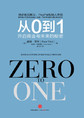

用户还喜欢
-
 完结《人类简史： 从动物到上帝》是以色列新锐历史学家的一部重磅作品。 从十万年前有生命迹象开始到21世纪资本、科技交织的人类发展史。
完结《人类简史： 从动物到上帝》是以色列新锐历史学家的一部重磅作品。 从十万年前有生命迹象开始到21世纪资本、科技交织的人类发展史。 -

完结《人类简史： 从动物到上帝》是以色列新锐历史学家的一部重磅作品。 从十万年前有生命迹象开始到21世纪资本、科技交织的人类发展史。
-
完结书中，从人类观念，人生态度，直到种种的具体问题， 如婚恋、家庭、日常生活、大自然，杂糅、说东道西、
-
完结书中，从人类观念，人生态度，直到种种的具体问题， 如婚恋、家庭、日常生活、大自然，杂糅、说东道西、
-
完结《人类简史： 从动物到上帝》是以色列新锐历史学家的一部重磅作品。 从十万年前有生命迹象开始到21世纪资本、科技交织的人类发展史。
- 出版社：中信出版社，中心出版集团
- ISBN：9787508672069
- 商品编码：12099462
- 品牌：中心出版社
- 包装：平装
- 开本：16开
- 出版时间：2017-03-01
- 用纸：纯质纸
- 页数：416
编辑推荐
★畅销30多个国家、100周蝉联榜单首位、比尔·盖茨、扎克伯格热荐的《人类简史》， 作者尤瓦尔?赫拉利新作！
★《卫报》《泰晤士报》年度推荐图书，诺贝尔经济学奖得主丹尼尔?卡尼曼盛赞！
★人类迎来第二次认知革命，算法将战胜自由意志，大部分人将沦为无用阶层！
一切都是数据处理。如果把每个人都想象成一个处理器，人与人之间的交流就是信息交流， 那么整个人类社会就是一个数据处理系统。整个人类历史，就是给这个系统增加效率的历史。
——尤瓦尔·赫拉利《未来简史》
从人类如何胜出，到人类的未来命运！
生命本身就是数据处理，算法将战胜自由意志！
2017烧脑奇书，颠覆认知，刷新你的世界观，
错过这本书的人将错过未来！
★人类未来面临的三大议题
进入21世纪后，曾经长期威胁人类生存、发展的瘟疫、饥荒和战争已经被攻克， 智人面临着新的待办议题：永生不老、幸福快乐和成为具有“神性”的升级人类。
★人类将迎来第二次认知革命
如果说diyi次认知革命是因为智人的DNA起了一点小变化， 让人类拥有了虚构的能力，创造了宗教、国家、企业等概念，使其成为地球的统治者。 那么，未来算法和生物技术将带来人类的第二次认知革命，完成从智人到神人的物种进化。
★人类认知升级的三个知识公式
中世纪时期，人类获取的知识公式：知识=经文×逻辑。
想知道某个重要问题的答案，我们会阅读相关经文，再用逻辑来理解经文的确切含义。
科学革命之后，人类获取知识的公式：知识=实证数据 × 数学
想知道某个重要问题的答案，我们会收集相关的实证数据，再用数学工具加以分析。
人文主义时期，人类获取知识的公式：知识=经验×敏感性
想知道某个重要问题的答案，我们需要连接到自己内心的体验，并以敏感性来观察它们
★未来掌握在少数精英手中
人类将把工作和决策权交给机器和算法来完成，大部分人将沦为“无用阶级”。 只有少数精英才能真正享受到这些新技术的成果，用智能的设计完成进化、 编辑自己的基因，最终与机器融为一体，统治全人类。
★算法将统治21世纪？
生命本身就是算法——动物和人都各有精密的算法，为的是生存和繁衍。 人的感觉、情绪、想法都是算法在支配。人类已经开发出更精密的算法，谷歌、facebook等大数据公司将比我们自己更了解人类。人类社会的未来将会是一个全新的、效率更高的数据处理系统，称为“万物互联网”。
内容简介
今天是2016年最后一天。
郑重推荐《人类简史》的作者尤瓦尔·赫拉利的新书——《未来简史》。
无论你有什么样的过去，错过这本书你肯定会错过未来。
【从《人类简史》到《未来简史》】
2016年是一个黑天鹅之年。
无论是阿尔法狗战胜李世乭，还是英国脱欧，再或者是特朗普当选美国总统。
空气中弥漫着一种不安的味道。
我们站在时代的分水岭上，未来是什么看不清楚。
那只靴子还没掉下来，但它是好是坏？什么时候掉下来？谁都不知道，再加上人工智能正极速发展。
用那句话来形容，真的是——
睡榻旁边就有人。它不仅在边上，而且正慢慢的爬起来，你还不知道他是个什么东西。 你还敢继续装睡吗？
我们这一代人的命运，被抛入了一股急流。
赫拉利的《人类简史》，是到目前为止，我看到的认知水平非常高的一 部总结人类过往历史的著作。
但是万没想到，都不到四年，他就拿出了第二部书——《未来简史》。
这一次，往前看。而且看得那么深，想象力那么奔放。
这书刚一出版，就在欧美世界引发了一阵旋风。
【这一次，进步来得太快】
我们正在面对怎样的未来？
在许多号称传统白领的领域，机器的智能越来越比人更适合工作。
只要有了足够的统计数据和计算能力，就是我们通常说的大数据——
机器对人类的理解，甚至可能超过我们对自己的理解；它可能比我们 更了解自己的身体状况，喜欢的餐厅，甚至适合的伴侣，擅长的工作。
现在我们引以为豪的任何技能，在原则上，将来机器都可以做到。
那么问题来了，在这样的未来里，我们还有什么用？应该用什么状态生存？
这个问题，如果，你从来没考虑过，那么在未来世界里， 你就很可能沦为喂养大数据智能的人肉饲料。
过往的人类历史证明：
进步是好的，更好的是缓慢的进步。
但这一次，
好消息是，我们在进步；
坏消息是，我们在飞快地进步。
精彩书评
《未来简史》是一部能够震撼人心，同时又趣味盎然的作品。而重要的是，这本书
会颠覆你的思考方式。”
——丹尼尔·卡尼曼，诺贝尔经济学奖得主、《思考，快与慢》作者
开篇就以令人艳羡（同时也令人警醒）的文字明确指出，由于基因技术、人工智能
和机器人技术正在不断改变人与人之间的关系以及人与其他物种之间的关系，所
以我们所有物种都面临着巨大挑战。甚至可以说，这本书比他那本了不起的《人
类简史》更具可读性和重要性。
——《卫报》
赫拉利之所以能够从当代众多历史学家中脱颖而出，就是缘于他不同常人
的清晰文笔和观察视角。
——《星期日泰晤士报》）
一本好书的标志就是不但能够改变读者看世界的方式，而且能够将历史
的另一面呈现给读者。在《未来简史》这本书里，尤瓦尔?赫拉利以一种通
俗易懂的方式让我们看到人类终将走向何方。
——《英国星期日邮报》
看着这样一位天才作家在那么多学科间行踏自如，
实在是一大快事……赫拉利的才能在于他切入所有这些领域的方式，
以及看待这个世界的各种方法，进而让我们得以从不同角度观察我们
以为自己已知的东西……最后大彻大悟。
——《金融时报》
《人类简史》是一部献给人类集体想象力的赞歌……暗示着这些重大
事件将如何引导我们创新革命性的信息和生物技术。在结尾处，赫拉
利写道“那些永不知足又不负责任的造物主们连他们究竟想要什么都不
知道，还有什么比这更危险的吗？”。这个问题在《未来简史》一书中得
到了回答，跟《人类简史》一样，这本续作依然闪烁着教科书和百
科全书般的光芒。
——《新科学家》